EnterpriseSG research assistant
Bringing conversational AI to an internal data hub
* Product name and assets replaced to protect internal product identity.

Overview
Officers at Enterprise Singapore were spending 2+ hours per company brief, manually pulling information from internal platforms and the open web before client meetings and strategy reviews. That was time taken away from higher-value client work.
To cut that time down, we built a conversational, agentic research assistant that brings company, sector and market insights into one place. Officers ask a question and get an answer drawn from EnterpriseSG’s internal data platform and real-time web search, with sources cited.
As the sole designer, I owned end-to-end product design, working closely with the PM, AI engineer and dev team to ship 13 features across multiple beta rounds.
From chatbot to research platform
The product went through three distinct phases, each shaped by what we learned from the one before.
Touchpoints AI
A chatbot embedded in the “Past Touchpoints” section of a company page in EnterpriseSG’s data platform. Scoped entirely to that company’s engagement history, it let officers ask about past interactions (eg. call reports, past meetings) without leaving their current view.
Assumption: officers want help in context, where they’re already looking.
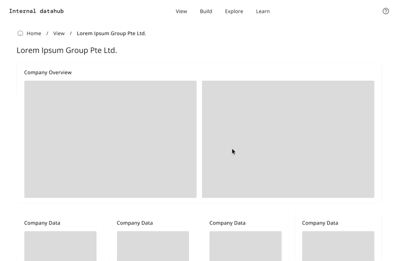
But officers needed more than touchpoints
Interviews with ~10 officers showed they needed more than engagement history. To prepare for a meeting or write a company brief, they were pulling together company profiles, grant and scheme history, financials and web research across multiple systems.
“I still need to use ChatGPT or Google to do a background search when meeting a new company.” — Participant A
Implication: the assistant had to bring internal data and web research together in one place.
Sidebar + Full page chat
I designed two surfaces in parallel: a sidebar chatbot for company-specific queries, embedded in the existing platform, and a standalone full-page chat for broader research across companies and sectors.
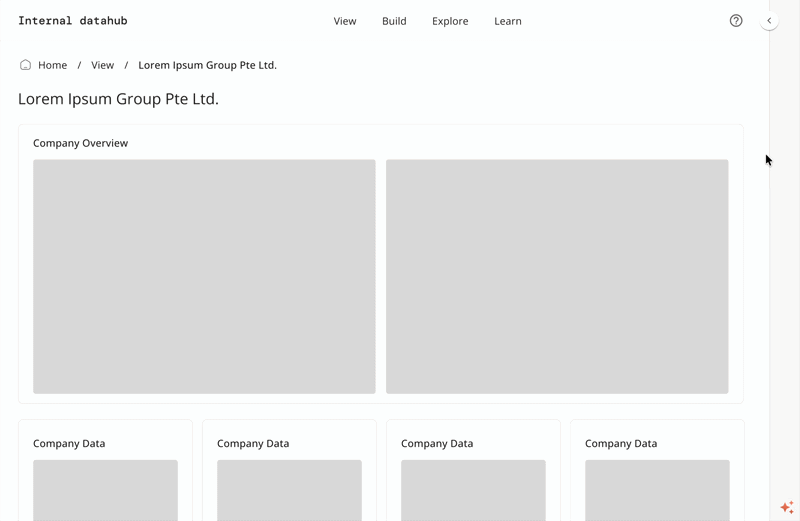
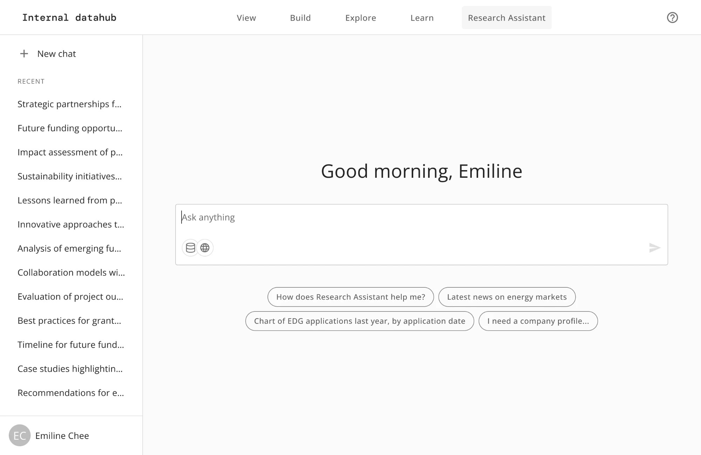
Org-wide beta testing
We ran two rounds of beta testing with ~70 officers across divisions, each guided through three structured test cases to surface usability issues and unmet needs.
Officers struggled to discover the sidebar and preferred the full-page chat for everything. We decommissioned the sidebar.
Insight: officers weren’t just reviewing one company. They were synthesising across companies, sectors and sources, and wanted one surface to do it all.
Top issues identified
As a user,
I want the agent to understand our context, like sector resolution, brief format and writing style.
I want my queries grounded in a specific company, without restating it in every prompt.
I want to see the web sources consulted, and open the underlying call reports without leaving the interface.
Agentic research platform
Those findings reshaped the product. Rather than asking a question and receiving an answer, officers now brief the agent: setting scope, activating skills, and letting the agent plan, query, synthesise and evaluate on its own before responding. The officer delegates; the agent handles the research workflow.
Insight: access to information wasn’t the bottleneck. Officers needed to be able to shape how the agent worked, not just what it searched.
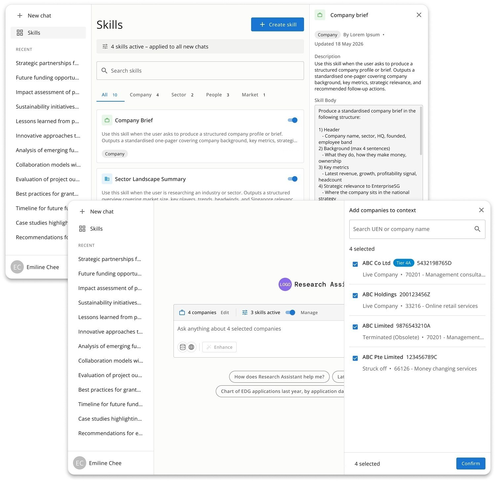
Key features
The beta findings shaped the 13 features that followed. Here are some of the key ones, the problem each solved and the decisions behind them.
ContextSkills and prompt enhancement
Beta feedback made it clear that officers weren’t struggling to access information. They struggled to ask for it in a way that produced useful results. Different officers expected different formats, tone and depth, and the agent had no way to account for that by default. I designed two features that tackle this at different points.
1. Skills
Skills are small, reusable instruction bundles that teach the agent how to execute a specific task consistently. For example, an officer activating the “Sector Landscape Summary” skill gets a structured overview of market size, key players and trends, without spelling any of that out in every prompt.
The challenge was making skills feel lightweight and within reach, not like a settings menu buried in a corner. The skills bar sits directly beneath the input, always visible. A manage link opens the library, where a drawer lets officers preview a skill while keeping the list in view.
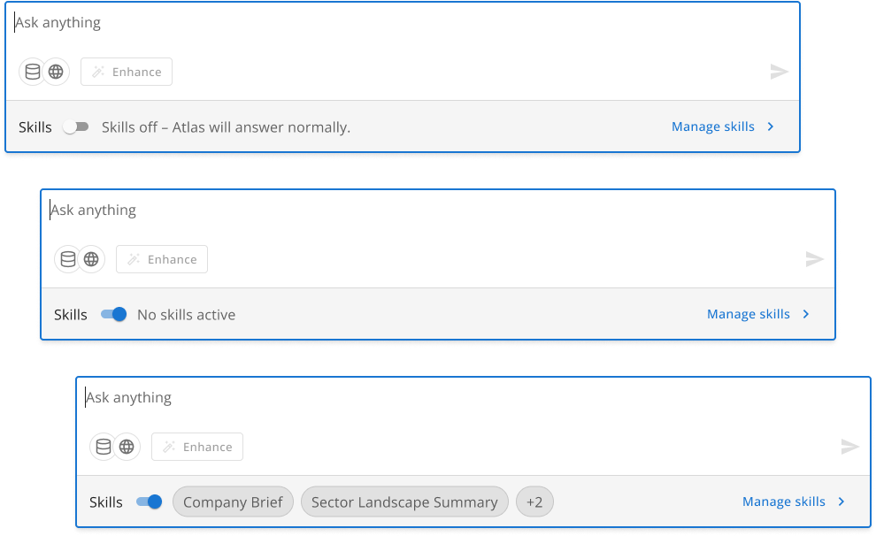
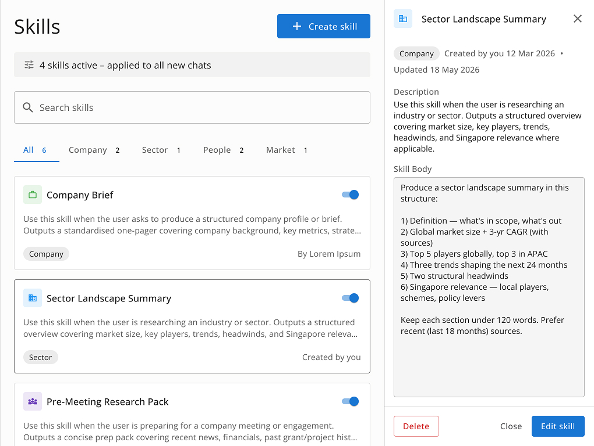
2. Prompt enhancement
Even with skills active, officers sometimes sent prompts too brief or ambiguous to produce a good result. The Enhance button tackles this at the moment of input, expanding and clarifying a prompt before it’s sent, without the officer needing to know what a “good” prompt looks like.
The interaction had to feel helpful, not corrective. I designed six states: empty (disabled), below the character threshold, ready, streaming (the text rewrites inline instead of showing a spinner), complete with two-level undo, and error, with amber for a timeout and red for a failure.
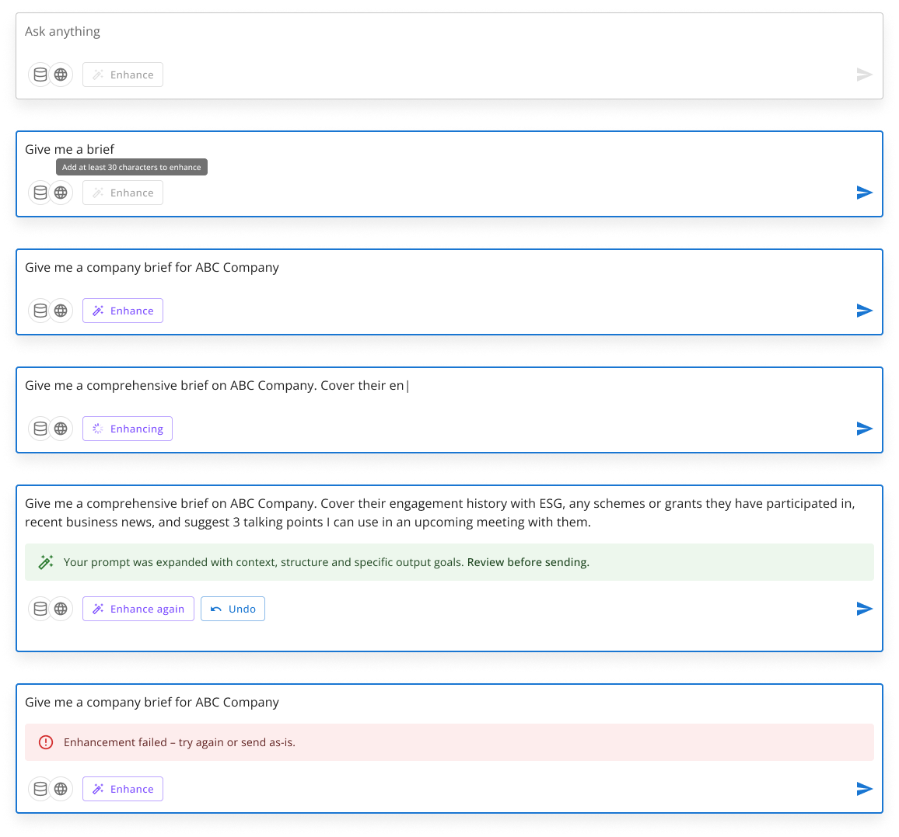
Company scoping
Officers needed a way to point queries at specific companies without breaking the flow of starting a conversation. Early versions treated scope as a single-company toggle, but feedback made it clear that scope had to support multiple companies.
Key constraint: scope had to be set before the first message. Changing it mid-session would invalidate the conversation context, so the entry point had to be clear, and the locked state had to explain itself rather than surface as an error.
Getting to the right pattern took several iterations, each exposing a different problem.
Slash command
Typing “/” in the input opened a contextual menu with companies and skills, a pattern familiar from tools like Notion or Claude. The problem was discoverability: officers who didn’t know the shortcut would never find scope or skills at all.
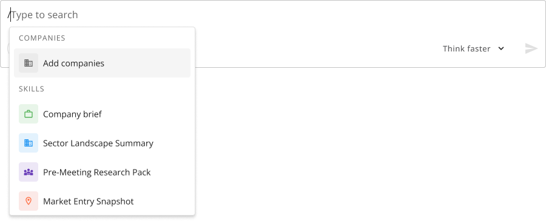
Settings gear popover
A single gear icon popover gave scope and skills one tidy entry point. But the icon gave no signal about what was configured: officers couldn’t tell whether scope was set or skills were active without clicking to check.
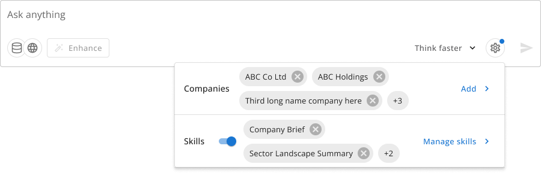
Scope banner above input
A persistent “Scoped to” banner above the input made scope visible at a glance. But with scope above and skills below, the composer felt heavy: two rows of configuration before officers had typed anything.
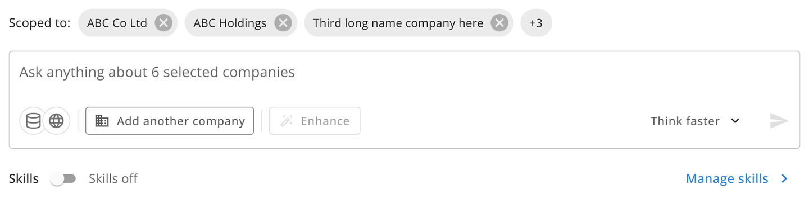
Config line
The solution was collapsing scope and skills into a single compact strip below the input: the config line. It always states the current setup (eg. “4 companies · 3 skills active”) and stays visible throughout the session, so officers can read their context at a glance before typing.
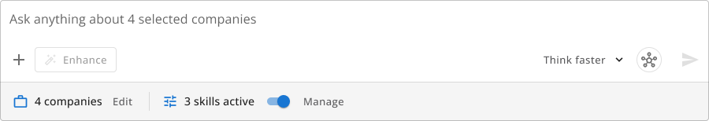
Clicking Edit opens a right-side drawer where scoped companies appear as chips, and officers can search to add or remove them. Changes are staged before they’re applied, so half-finished edits never take effect. Once confirmed, the config line and input placeholder update to match.
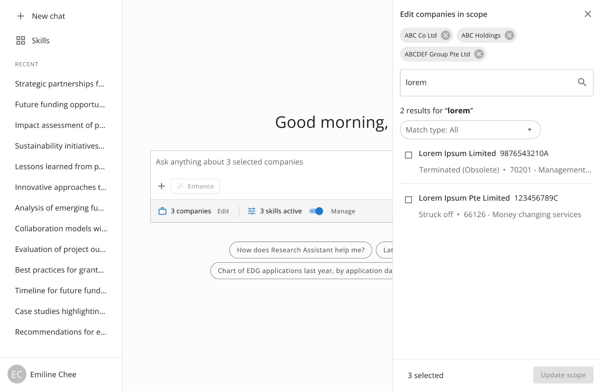
Source attribution
From the earliest interviews, trust was the central concern: officers wanted to know how a response was reached and where it came from before relying on it. So source attribution had to be visible at every stage of the research, not just appended to a finished answer. Two components carry this across the product.
1. Citation bubbles in reasoning steps
As the agent works through a query, it shows the web sources consulted at each reasoning step, inline and in real time, so officers see the research as it happens. Citation bubbles are compact chips on each step that expand to show source detail on demand.
2. Call report drawer
For internal sources, officers needed to verify the call reports a response cites without leaving the chat. Clicking a report reference opens a right-side drawer with the full report. The left sidebar collapses to an icon rail to make space, keeping the chat visible beside the drawer.
The key decision was treating the collapsed sidebar as a state triggered by the drawer, not a user preference. When the drawer closes, the sidebar expands again automatically, so officers never have to restore their workspace by hand.
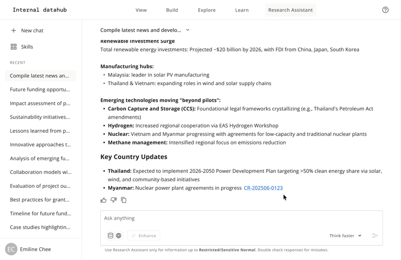
Outcomes
The research assistant launched in August 2026.
What’s next
I’m now designing the next release, including a skills library and secure file upload, and using live usage data to decide what to prioritise after that.